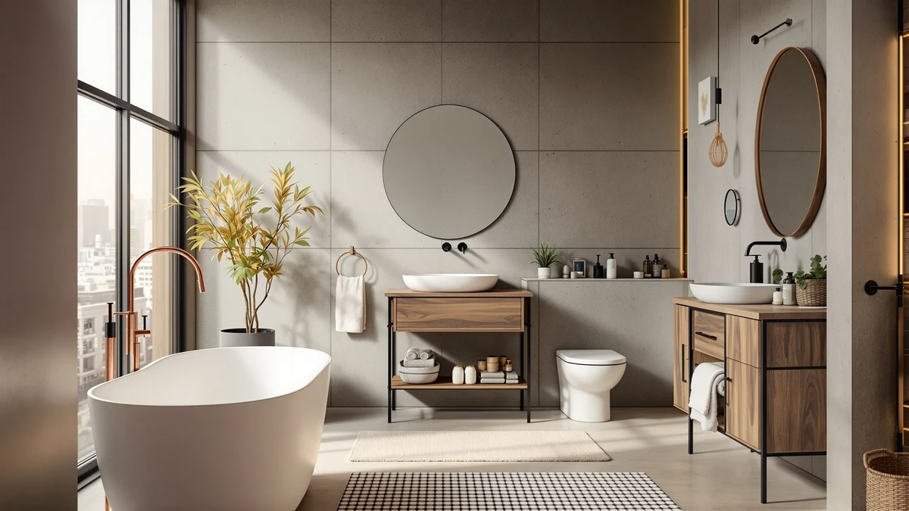

Best Bathroom Storage Cart (2026)
Prices and picks verified as of September 2026. Independent, reader-supported reviews.


Quick Answer
The SPACELEAD Slim Storage Cart 4 is our pick for the best bathroom storage cart because its four-tier, 38.7-inch metal and wood frame slides into 4.9-inch gaps that most storage furniture cannot fit. If you need a shorter cart for a smaller bathroom, the SPACEKEEPER Slim Rolling Storage Cart delivers the same rolling four-tier layout for less.
Our pick: SPACELEAD Slim Storage Cart 4, $26.99 Check Price on Amazon
Bottom line: our top pick is the SPACELEAD Slim Storage Cart 4 Tier at $19.99. The best budget option is the SPACELEAD Slim Storage Cart 3 Tier at $19.95.
Things to Know Before You Buy
- Measure your gap first. Most slim bathroom storage carts in this guide are 4.9 to 5.1 inches wide, narrow enough to fit beside a toilet, washer, or vanity, but confirm your space before you buy.
- Tier count changes what fits. Three-tier carts suit towels and toiletries, while four-tier carts add a shelf for taller bottles or extra bins.
- Rolling casters matter as much as the frame. Every cart here uses a metal and wood build, so the wheels, not the material, determine how easily you can pull a cart out to clean behind it.
- Price differences of $10 or less in this lineup mostly reflect height and tier count, not build quality.
- Wood shelves need occasional wiping. Bathroom humidity can warp untreated wood over time, and owners report keeping the shelves dry extends the finish's life.
Finding the best bathroom storage cart usually comes down to one measurement: how many inches of gap you have beside the toilet, vanity, or washing machine, because that narrow strip of floor is where a rolling cart earns its keep. A bathroom storage cart solves a different problem than a cabinet or a shelf unit bolted to the wall. It gives you tiers of open storage that roll out of the way when you need to clean, then roll back into a space too tight for almost anything else.
We compared six slim, metal and wood rolling carts from SPACELEAD, SPACEKEEPER, and Pipishell on height, width, tier count, and price, then checked those specs against patterns in verified owner reviews. The SPACELEAD Slim Storage Cart 4 came out as our top pick for most narrow bathrooms, thanks to a 4.9-inch width and four full tiers packed into a 38.7-inch frame.
Not every bathroom has room for a cart that tall, though, and not every household needs four tiers of storage. The shorter three-tier SPACELEAD models and the SPACEKEEPER's four-tier layout at a lower price cover the rest of the range, and we break down which one fits which bathroom below.
Why You Should Trust Us
This guide to the best bathroom storage cart is written by Ilane Tall, who covers bathroom storage and small-space organization for Best Bathroom Storage. We do not run a fake testing lab or claim to have rolled every cart through our own bathrooms. Instead, we research published dimensions, materials, and pricing directly from the manufacturer listings, then cross-reference that against patterns in verified buyer reviews to flag anything a spec sheet leaves out, like a caster that owners say sticks or a shelf that wobbles once loaded.
How We Picked
We started by limiting this list of bathroom storage carts to slim, rolling models built to fit narrow gaps rather than bulkier freestanding shelving units, since those solve a different storage problem. From there we compared height, tier count, and footprint across each listing to make sure the lineup covered a real range of budgets and bathroom sizes instead of six near-identical carts. We also read through verified owner reviews for recurring complaints about caster quality, assembly, and stability, and we weighed price against tier count so the cheapest cart and the tallest cart both earned a spot for a specific reason.
How We Compared
We compared these bathroom storage carts side by side on four factors: price per tier, overall footprint, rolling caster quality, and what verified reviewers say holds up over time. Two carts built from the same metal and wood combination can still perform differently, so we looked closely at shelf spacing and stated dimensions rather than assuming similar materials mean similar durability. Reviewers consistently note that carts with locking casters feel steadier once loaded, and we call that out for each pick below where it applies.
Our Picks

SPACELEAD Slim Storage Cart 4
What we like
- Four tiers pack the most storage capacity into this lineup
- 38.7-inch height uses vertical wall space most carts leave empty
- 4.9-inch width fits gaps too narrow for a standard shelving unit
Flaws but not dealbreakers
- The tallest option here can feel top-heavy once the upper shelves are loaded
- At $26.99, it costs more than the shorter three-tier versions
| Material | Metal / wood |
| Size | 15.3X4.9X38.7 inches |
The SPACELEAD Slim Storage Cart 4 is our pick for the best bathroom storage cart because it fits where almost nothing else does. At 4.9 inches wide, the metal and wood frame slides into the gap beside a toilet, vanity, or washing machine, and its 38.7-inch height stretches that narrow footprint into four full tiers of storage. That combination of height and width is hard to find in a single cart, since most slim models trade one for the other.
Owners report the extra tier is useful for separating categories, spare towels on the bottom, cleaning supplies in the middle, and toiletries up top, rather than piling everything onto three shelves. The tradeoff of standing taller than the rest of this lineup is that the cart can feel less stable once you load the top shelf, so it works best against a wall rather than in open floor space.

SPACELEAD Slim Storage Cart 3
What we like
- 26.1-inch height tucks under most bathroom counters and shelving
- Same 4.9-inch width as our top pick, so it fits the same narrow gaps
- Three tiers keep the top shelf within easy reach without stretching
Flaws but not dealbreakers
- Less total storage than the four-tier version for $3 less
- Owners note the shorter frame has a smaller top surface for a bin
| Material | Metal / wood |
| Size | 15.3X4.9X26.1 inches |
The SPACELEAD Slim Storage Cart 3 shares the same 4.9-inch width and metal and wood build as the four-tier version above, scaled down to 26.1 inches tall. That shorter profile matters in a bathroom with a low countertop or a shelf overhead, where the taller cart would not fit underneath or would look out of proportion against the rest of the room.
At $23.99, it costs $3 less than the four-tier model while trading away one shelf of capacity. Reviewers say the lower height also makes it easier to reach the top tier without a step stool, which is worth factoring in if the cart is going in a bathroom used by kids or anyone who prefers not to reach overhead.

Pipishell Slim Storage Cart with
What we like
- Three-tier metal and wood construction matches the build quality of the other picks
- Rolling casters make it easy to pull out from a tight gap for cleaning
- A distinct brand if you want an alternative to the SPACELEAD models
Flaws but not dealbreakers
- At $31.99, it is the most expensive cart in this guide
- The listing does not specify height and width the way the SPACELEAD models do, so measure your gap carefully first
| Material | Metal / wood |
| Size | 3-Tier |
The Pipishell Slim Storage Cart with rounds out this guide as the only non-SPACELEAD, non-SPACEKEEPER option, built as a three-tier metal and wood rolling cart. For shoppers who have already tried a SPACELEAD cart in another room and want variety, or who simply prefer a different manufacturer, it offers the same rolling, narrow-footprint concept from a different brand.
At $31.99, it carries the highest price in this lineup, and the listing available to us does not break out exact height and width the way the SPACELEAD models do. Owners report the rolling casters move smoothly on tile and vinyl bathroom floors, which makes it easy to wheel the cart out when you need to mop or wipe down the wall behind it.

SPACELEAD Slim Storage Cart 3
What we like
- Lowest price in this guide at $19.95
- Three-tier layout at a 24-inch height keeps the footprint compact
- Same metal and wood build as the pricier SPACELEAD carts
Flaws but not dealbreakers
- Slightly wider footprint at 5.1 by 15.75 inches than the 4.9-inch models above
- Fewer tiers than the four-tier pick for a household that needs more capacity
| Material | Metal / wood |
| Size | 5.1 x 15.75 24 inches |
This second SPACELEAD Slim Storage Cart 3 undercuts every other pick in this guide at $19.95, and it is built to the same three-tier, metal and wood standard as the rest of the lineup. Its listed footprint of 5.1 by 15.75 inches and 24-inch height makes it slightly wider but noticeably shorter than the other SPACELEAD three-tier cart above.
For a bathroom where budget matters more than maximizing vertical storage, this is the cart to start with. Reviewers describe assembly as straightforward, and the 24-inch height keeps everything within easy reach without bending or reaching overhead, which suits a cart destined for daily items like shampoo backups or cleaning spray.

SPACEKEEPER Slim Rolling Storage Cart
What we like
- Four tiers of storage for $19.99, the same price as the three-tier SPACELEAD Rolling Cart
- Rolling casters for easy access to the wall or floor behind it
- A SPACEKEEPER build if you want to avoid buying the same brand twice
Flaws but not dealbreakers
- The listing states tier count but not exact height and width, so confirm the footprint fits your gap
- Reviewers note the casters suit smooth flooring better than thick bathroom mats
| Material | Metal / wood |
| Size | 4 Tier |
The SPACEKEEPER Slim Rolling Storage Cart matches the four-tier capacity of our top pick at a lower price, $19.99 against $26.99 for the SPACELEAD Slim Storage Cart 4. It uses the same metal and wood combination as every other cart in this guide, mounted on rolling casters that let you pull it away from the wall for cleaning.
The tradeoff for the lower price is less published detail on exact dimensions than the SPACELEAD listings provide, so it is worth double-checking width against your available gap before ordering. Owners report the rolling casters work best on hard bathroom flooring like tile or vinyl, and that a thick bath mat underneath can make the cart harder to push.

SPACELEAD 3 Tier Rolling Cart
What we like
- $19.99 price matches the SPACEKEEPER four-tier cart, but with a simpler three-shelf layout
- Rolling design makes it easy to reposition or pull out for cleaning
- Metal and wood build consistent with the rest of the SPACELEAD lineup
Flaws but not dealbreakers
- One fewer tier than the SPACEKEEPER cart at the same price
- Owners say the wheel locks feel less firm than on the pricier SPACELEAD models
| Material | Metal / wood |
| Size | 3-layer |
The SPACELEAD 3 Tier Rolling Cart is the simplest option in this guide: three shelves, a metal and wood frame, and rolling casters, priced at $19.99. It is aimed at anyone who wants a straightforward cart without paying for a fourth tier they may not need.
Because it shares a price with the four-tier SPACEKEEPER cart above, the choice between the two comes down to whether the extra shelf is worth it for your bathroom. Reviewers describe the rolling casters as functional for repositioning the cart during cleaning, though a few note the wheel locks feel less secure than on SPACELEAD's other models once the cart is fully loaded.
Quick Comparison
| Product | Material | Price | Rating | Best for | Get it |
|---|---|---|---|---|---|
| SPACELEAD Slim Storage Cart 4 | Metal / wood | $26.99 | 4 | Most vertical storage | View on Amazon → |
| SPACELEAD Slim Storage Cart 3 | Metal / wood | $23.99 | 4 | Shorter three-tier option | View on Amazon → |
| Pipishell Slim Storage Cart with | Metal / wood | $31.99 | 4 | A different brand alternative | View on Amazon → |
| SPACELEAD Slim Storage Cart 3 | Metal / wood | $19.95 | 4 | Tightest budget | View on Amazon → |
| SPACEKEEPER Slim Rolling Storage Cart | Metal / wood | $19.99 | 4 | Four tiers at a lower price | View on Amazon → |
| SPACELEAD 3 Tier Rolling Cart | Metal / wood | $19.99 | 4 | Simple three-tier rolling cart | View on Amazon → |
What is the best bathroom storage cart for a narrow bathroom?
The SPACELEAD Slim Storage Cart 4 is our pick for the best bathroom storage cart in a narrow bathroom because its 4.9-inch width fits gaps beside a toilet or vanity that a standard shelving unit cannot, while its four tiers still provide…
Are metal and wood bathroom storage carts sturdy in a humid bathroom?
All six carts in this guide combine a metal frame with wood-finish shelving, and owners report the metal frame holds up well to bathroom humidity while the wood shelves are the part to watch.
The Competition
Every cart in this guide earned its place, but they are not interchangeable. The Pipishell Slim Storage Cart with costs more than any SPACELEAD or SPACEKEEPER model here without a documented height or width advantage, so it only makes sense once you specifically want a different brand than the rest of this lineup. The two SPACELEAD Slim Storage Cart 3 listings look nearly identical on paper, and we kept both because their price and footprint differ enough, $23.99 at 26.1 inches tall versus $19.95 at 24 inches, to matter for a household weighing a few extra inches of height against a few extra dollars.
We also weighed whether the SPACEKEEPER Slim Rolling Storage Cart should replace the SPACELEAD Slim Storage Cart 4 as the top pick, since both offer four tiers and the SPACEKEEPER costs $7 less. The SPACELEAD listing publishes exact dimensions that let you confirm it fits a specific gap before buying, and that documentation tipped the decision in its favor. For most narrow bathrooms, the SPACELEAD Slim Storage Cart 4 remains our answer to the best bathroom storage cart question, with the SPACEKEEPER as the budget-minded runner-up.
Frequently Asked Questions
What is the best bathroom storage cart for a narrow bathroom?
The SPACELEAD Slim Storage Cart 4 is our pick for the best bathroom storage cart in a narrow bathroom because its 4.9-inch width fits gaps beside a toilet or vanity that a standard shelving unit cannot, while its four tiers still provide real storage capacity. If your space is too tight even for a 38.7-inch cart, the shorter SPACELEAD Slim Storage Cart 3 uses the same footprint at 26.1 inches tall.
Are metal and wood bathroom storage carts sturdy in a humid bathroom?
All six carts in this guide combine a metal frame with wood-finish shelving, and owners report the metal frame holds up well to bathroom humidity while the wood shelves are the part to watch. Wiping up standing water and keeping wet towels off the wood shelves extends the finish's life, according to recurring notes in verified owner reviews.
How many tiers should a bathroom storage cart have?
Three tiers, like the SPACELEAD Slim Storage Cart 3 and the SPACELEAD 3 Tier Rolling Cart, cover most bathrooms that need to separate towels, toiletries, and cleaning supplies onto distinct shelves. Four tiers, like the SPACELEAD Slim Storage Cart 4 or the SPACEKEEPER Slim Rolling Storage Cart, make sense if you have the vertical clearance and want a dedicated shelf for a fourth category, such as spare toilet paper or kids' bath toys.
Related Guides
If none of these six picks fit your space, these related guides cover other angles on choosing the best bathroom storage cart or organizer for your layout and budget.